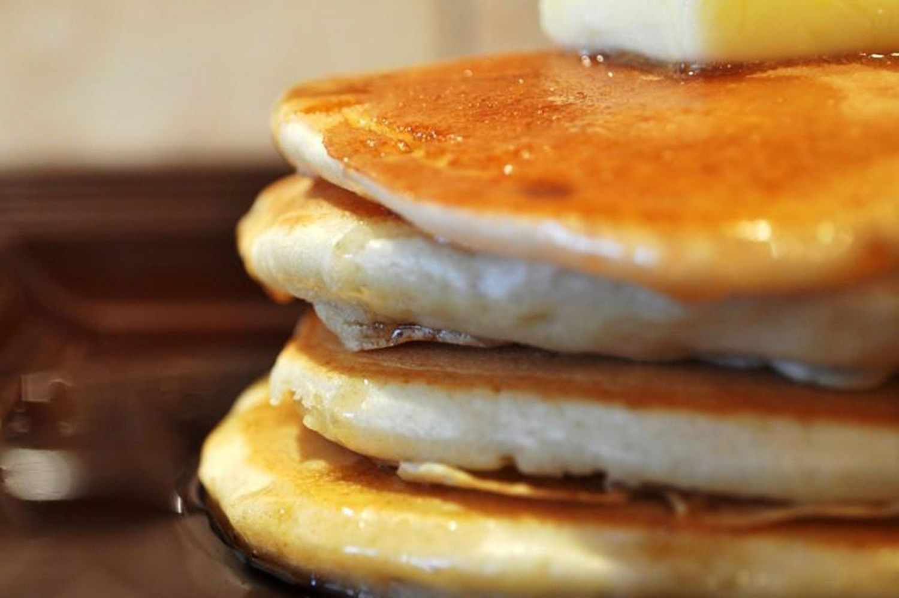

Pancakes

Ingredients
- 1 Egg
- 200g Plain Flour
- Pinch of fine salt
- Milk & Water (1 pint, do not use all)
Method
- Sieve flour into big bowl with the salt.
- Make a dip into the middle and add the egg into the dip.
- Slowly mix the egg and flour.
- When fully mixed, add milk and water while stirring.
- Should have thick consistency.
- Hand blender to get rid of lumps.
- Refrigerate for over 15 minutes.